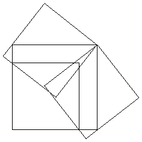
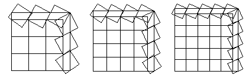
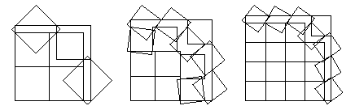
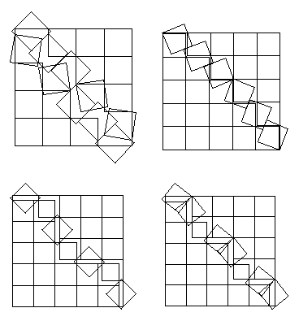
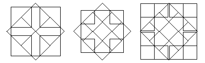
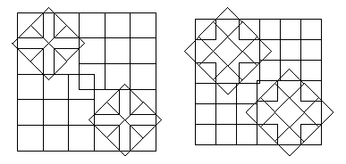
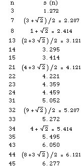
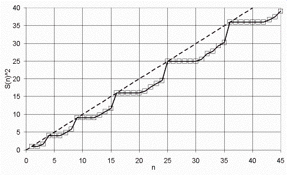
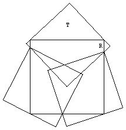

Covering Squares with Unit Squares
Erich Friedman
Stetson University, DeLand, FL 32723
efriedma@stetson.edu
David Paterson
CSIRO MIT, Highett, Vic, Australia
david.paterson@csiro.au
Introduction
The problem of covering squares with congruent squares has been around a long time. In 1931, Dudeney published a problem [1] in which a square table of area φ 1.618 was to be covered with 3 square tablecloths of area 1. The solution is shown below in Figure 1.

Figure 1. Optimal covering with 3 squares
Alexander Soifer [5], [6] considered the problem of finding the smallest number of unit squares that can cover a square of side n+ε. We consider the dual problem of finding the side s(n) of the largest square that can be covered with n unit squares.
From area considerations, it is trivial that s(n) ≤ √n, and from s(n2) = n and monotonicity we have s(n) ≥  n
n . When the decimal part of √n is smaller than 1/2, this is the best known lower bound. Thus we only consider n where the decimal part of √n is at least 1/2. (This is similar to the corresponding packing problem of packing n unit squares inside the smallest square [2]. When n is small and the decimal part of √n is larger than 1/2, the optimal packings seem to be trivial.)
. When the decimal part of √n is smaller than 1/2, this is the best known lower bound. Thus we only consider n where the decimal part of √n is at least 1/2. (This is similar to the corresponding packing problem of packing n unit squares inside the smallest square [2]. When n is small and the decimal part of √n is larger than 1/2, the optimal packings seem to be trivial.)
These best-known coverings seem to fall into 4 groups:
I) a large square in the lower left corner, with additional squares covering the bent strip along the upper and right hand edges.
II) two triangular "staircases" of squares in the lower left and upper right corners, with additional squares covering the main diagonal.
III) four triangular "staircases" of squares in the corners, with a large square "diamond" covering the center.
IV) compound coverings made by overlapping smaller best-known coverings.
We exhibit examples of each of these. Coverings not attributed to someone else were discovered by the second author.
Examples
When n = k2-1, the best-known covering is usually in group I, as shown in Figure 2. The covering in Figure 1 is also in this series. The first two coverings in Figure 2 are due to David Cantrell.

Figure 2. Best-known coverings with 15, 24, and 35 squares (Type I)
Also, when n = k2-2, the best-known covering usually belongs (loosely) to group I, as shown in Figure 3. These were discovered by Trevor Green, Michael Kearney, and David Cantrell respectively.

Figure 3. Best-known coverings with 7, 14, and 23 squares (Type I)
When k2 - k < n < k2-2, the best-known covering is often in group II, as shown in Figure 4. The first was discovered by David Cantrell.
Certain values of n lend themselves to a better covering in group III, as shown in Figure 5. The first was discovered by Trevor Green.

Figure 4. Best-known coverings with 22, 31, 32, and 33 squares (Type II)

Figure 5. Best-known coverings with 8, 13, and 21 squares (Type III)
Still other values of n lend themselves to a compound covering in group IV, as shown in Figure 6. These examples illustrate the general theorem that s(2n+2m) ≥ s(n)+s(m).

Figure 6. Best-known coverings with 34 and 44 squares (Type IV)
The non-trivial conjectured values of s(n) are given in Table 1. A graph of the conjectured values of s(n)2 is given in Figure 7.

Table 1. The non-trivial conjectured values of s(n)

Figure 7. The conjectured values of s(n)2
Proofs
To show that s(2)=1, assume 2 squares can cover a larger square S. Then both squares must cover exactly two corners of S. Any square that covers the two left (or right) corners of S can cover no more than length 2√2-1 < 1 of the horizontal edges of S, a contradiction. The proofs of s(5)=2 and s(10)=3 are similar. 
To show that s(3)=√((√5+1)/2), assume 3 squares can cover a larger square S. We first show that each square covers a corner of S. Any square that covers the two left (or right) corners of S can cover no more than length 1/3 of a horizontal edge of S, so if two squares together cover all the corners, this leaves at least length 1/2 uncovered along two opposite sides of S, which a third square cannot cover. Thus each square covers a corner of S, and at least one square covers two corners.
We can assume each square is translated and rotated so as to cover as much of the perimeter of S as possible, and that a square T covers the top two corners. This only leaves one degree of freedom: the length R of the right side of S covered by T, as in Figure 8. It is easy to verify that the side of S is largest when R=0, which leads to the covering in Figure 1.

Figure 8. Covering a square with 3 squares
Unsolved Questions
1) Are the coverings presented here optimal? The optimal covering is known only when n = 2, 3, 5, 10, and square n.
2) What are the corresponding results for other shapes? Melissen [4] has considered the case of circles covering circles, but little is known about other shapes.
3) What are the results in higher dimensions? Even the case of 4 cubes "covering" a cube is unsolved.
References
[1] H. E. Dudeney, Puzzles and Curious Problems, Thomas Nelson and Sons Ltd., London 1931, Problem 219
[2] E. Friedman, "Packing Unit Squares in Squares: A Survey and New Results", Electronic Journal of Combinatorics, DS7
[3] E. Friedman, "Squares Covering Squares", http://www.stetson.edu/~efriedma/squcosqu/
[4] J. B. M. Melissen, Packing and Coverings with Circles, PhD thesis, 1997 (Universiteit Utrecht)
[5] A. Soifer, "Cover-Up Squared", Geombinatorics XIV 4, 2005
[6] A. Soifer, "Cover-Up Squared II", Geombinatorics XV 1, 2005